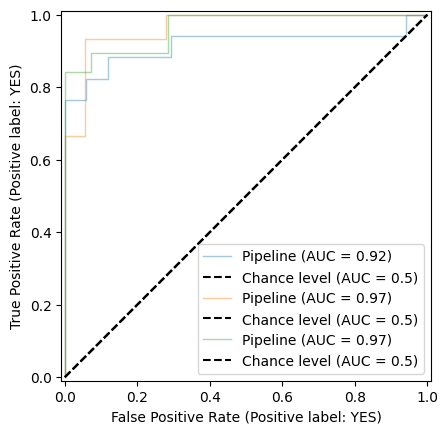

import numpy as np
import matplotlib.pyplot as plt
import pandas as pd
from sklearn.model_selection import KFold
from sklearn.preprocessing import StandardScaler
from sklearn.linear_model import LogisticRegression
from sklearn.model_selection import GridSearchCV
from sklearn.pipeline import Pipeline
from sklearn.metrics import RocCurveDisplay
from sklearn.metrics import ConfusionMatrixDisplay
from sklearn.metrics import auc
from sklearn.metrics import confusion_matrix, accuracy_score
from matplotlib.ticker import FormatStrFormatter
Nested cross validation
1 Nested cross validation
In [50]:
In [9]:
# Import data
df = pd.read_csv("./data/UV_pilot.csv")In [10]:
# Split features and target
X = df.loc[:,"4000":"403"]
y = df.loc[:,"Exposed"]In [13]:
scaler = StandardScaler()
model = LogisticRegression(max_iter=10000)
splits_outer = 3
splits_inner = 3
pipe = Pipeline(steps=[("scaler", scaler), ("model", model)])
# configure nested cross-validation layers
cv_outer = KFold(n_splits=splits_outer, shuffle=True, random_state=123)
cv_inner = KFold(n_splits=splits_inner, shuffle=True, random_state=123)In [46]:
# create confusion matrix list to save each of external cv layer
cm_nested = []
# enumerate splits and create AUC plot
yhat_nested = []
y_test_nested = []
X_test_nested = []
best_estimators = []
mean_fpr = np.linspace(0, 1, 100)
outer_results = list()
for train_ix, test_ix in cv_outer.split(X):
# split data
X_train, X_test = X.iloc[train_ix, :], X.iloc[test_ix, :]
y_train, y_test = y[train_ix], y[test_ix]
# define search space
param_grid = {'model__penalty': ['l1', 'l2'],
'model__C': [0.01, 0.1, 1, 10],
'model__solver': ['liblinear', 'saga']
}
# define search
search = GridSearchCV(pipe, param_grid, scoring='accuracy', cv=cv_inner, refit=True)
# execute search
result = search.fit(X_train, y_train)
# get the best performing model fit on the whole training set
best_model = result.best_estimator_
# create pipeline with the best model
best_pipe = Pipeline(steps=[("scaler", scaler), ("best_model", best_model)])
best_pipe.fit(X_train, y_train)
# evaluate model on the hold out dataset
yhat = best_pipe.predict(X_test)
# evaluate the model
acc = accuracy_score(y_test, yhat)
cm = confusion_matrix(y_test, yhat)
yhat_nested.append(yhat)
y_test_nested.append(y_test)
X_test_nested.append(X_test)
# store the result
outer_results.append(acc)
cm_nested.append(cm)
best_estimators.append(best_pipe)
print(f'Accuracy = {result.best_score_:.2f}, Parameters={result.best_params_}')
# summarize the estimated performance of the model
print(f'Final accuracy = {np.mean(outer_results):.2f} ± {np.std(outer_results):.2f}')Accuracy = 0.92, Parameters={'model__C': 10, 'model__penalty': 'l1', 'model__solver': 'liblinear'}
Accuracy = 0.87, Parameters={'model__C': 10, 'model__penalty': 'l2', 'model__solver': 'liblinear'}
Accuracy = 0.85, Parameters={'model__C': 10, 'model__penalty': 'l1', 'model__solver': 'liblinear'}
Final accuracy = 0.88 ± 0.05In [40]:
# sum all the confusion matrices
cm_sum = np.sum(cm_nested,axis=0)
# we normalised the confusion matrix
cm_sum_normalized = cm_sum.astype('float')/cm_sum.sum(axis=1)[:, np.newaxis]
# Plot the confusion matrix
disp = ConfusionMatrixDisplay(confusion_matrix=cm_sum_normalized, display_labels=best_model.classes_)
disp.plot(cmap = "PuBu")<sklearn.metrics._plot.confusion_matrix.ConfusionMatrixDisplay at 0x15e922240>In [56]:
# AUC-ROC curve
mean_fpr = np.linspace(0, 1, 100)
tprs = []
aucs = []
fig, ax = plt.subplots()
for a, b, c in zip(X_test_nested,y_test_nested, best_estimators):
viz = RocCurveDisplay.from_estimator(
c,
a,
b,
alpha=0.4,
lw=1,
plot_chance_level = True,
ax=ax)
interp_tpr = np.interp(mean_fpr, viz.fpr, viz.tpr)
interp_tpr[0] = 0.0
tprs.append(interp_tpr)
aucs.append(viz.roc_auc)
In [57]:
mean_tpr = np.mean(tprs, axis=0)
mean_tpr[-1] = 1.0
mean_auc = auc(mean_fpr, mean_tpr)
std_auc = np.std(aucs)
fig, ax = plt.subplots()
for a, b, c in zip(X_test_nested,y_test_nested, best_estimators):
viz = RocCurveDisplay.from_estimator(
c,
a,
b,
alpha=0.4,
lw=1,
plot_chance_level = True,
ax=ax)
interp_tpr = np.interp(mean_fpr, viz.fpr, viz.tpr)
interp_tpr[0] = 0.0
tprs.append(interp_tpr)
aucs.append(viz.roc_auc)
ax.plot(
mean_fpr,
mean_tpr,
color="darkblue",
label=r"Mean ROC (AUC = %0.2f $\pm$ %0.2f)" % (mean_auc, std_auc),
lw=2.5,
alpha=1)
In [59]:
fig, ax = plt.subplots()
for a, b, c in zip(X_test_nested,y_test_nested, best_estimators):
viz = RocCurveDisplay.from_estimator(
c,
a,
b,
alpha=0.4,
lw=1,
plot_chance_level = True,
ax=ax)
interp_tpr = np.interp(mean_fpr, viz.fpr, viz.tpr)
interp_tpr[0] = 0.0
tprs.append(interp_tpr)
aucs.append(viz.roc_auc)
ax.plot(
mean_fpr,
mean_tpr,
color="darkblue",
label=r"Mean ROC (AUC = %0.2f $\pm$ %0.2f)" % (mean_auc, std_auc),
lw=2.5,
alpha=1)
std_tpr = np.std(tprs, axis=0)
tprs_upper = np.minimum(mean_tpr + std_tpr, 1)
tprs_lower = np.maximum(mean_tpr - std_tpr, 0)
ax.fill_between(
mean_fpr,
tprs_lower,
tprs_upper,
color="grey",
alpha=0.2)
ax.get_legend().remove()